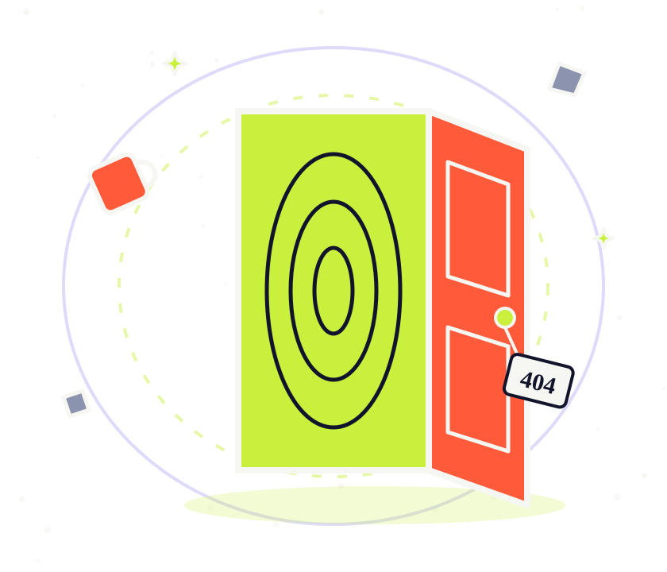

ERROR 404 · RIFT CODE MARA-404-Ω
This page has been relocated to another dimension.
It's fine. It happens. Usually to buildings. Dr. Mara recommends a slow breath and one of the doors below.
If you got here from inside a time loop, you've seen this page before. Hi again.
